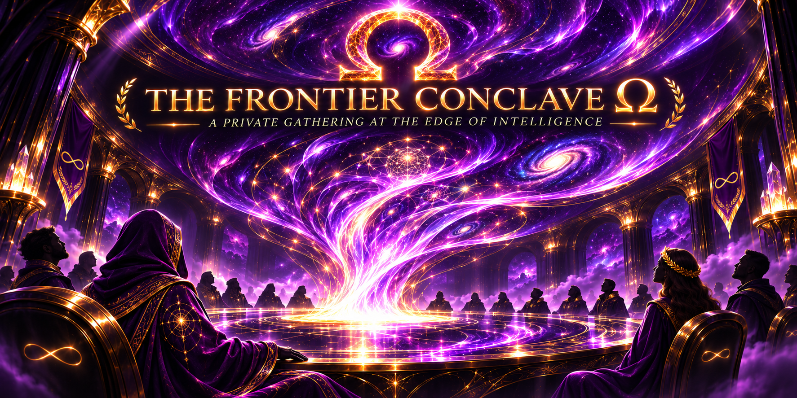

01
Make it inspectable.
Turn a precise policy into an executable acceptance checker. Use the prepared reference, or attempt live construction through a manual ChatGPT workflow.

A private gathering at the edge of intelligence. An open invitation to inspect the work. Build a small instrument, challenge its decisions, and discover what remains useful when the session ends.
Three fictional teams want one shared tool. None can fund it alone. Together, they have enough capacity. But a funded proposal is not necessarily an acceptable proposal.
The instrument checks the declared rules: individual caps, nonnegative contributions, sufficient funding and explicit consent from all three participants.
Combined contribution caps, in fictional whole units.
420 + 30 = 450Project cost plus contingency.
90 + 140 + 220 = 450One feasible proposal, conditional on every participant's consent. Arithmetic is not evidence of real demand or willingness to pay.
Turn a precise policy into an executable acceptance checker. Use the prepared reference, or attempt live construction through a manual ChatGPT workflow.
Withdraw consent. Exceed a cap. Remove one unit. Preserve first-attempt failures and distinguish a repair from an independent confirmation.
Export, extract and run on fresh input. Keep the rules, provenance and acceptance boundary with the useful instrument, not just its answer.
Download and extract the entire ZIP. Open START-HERE.html for the prepared browser explainer. For actual checker execution, open a terminal in the extracted folder:
python3 RUN_WORKSHOP.py check
python3 RUN_WORKSHOP.py run inputs/funded.json
python3 RUN_WORKSHOP.py run inputs/consent-withdrawn.json
python3 RUN_WORKSHOP.py run inputs/fresh-reopen.json
python3 -m unittest test_experiment -vWindows: use py if appropriate. A rejected proposal reports accepted:false; a successful program exit does not mean the proposal was accepted.
What this is: an implemented, tested prepared workshop kit. Eight automated tests include 2,000 seeded comparisons with a separate direct oracle, malformed-input rejection, a deliberately labeled faulty candidate, and extracted-copy execution.
What this is not: a completed live frontier-model rehearsal, a commercially qualified autonomous business, or proof of general invention. Finite tests are not universal proof. The browser explainer is illustrative, not live candidate execution.
Using ChatGPT Pro: the kit supplies a manual builder prompt and import workflow. Select an available model in your own account and record its actual name and mode. No authenticated Pro-to-HARNESS connector, guaranteed model availability or verified computer-use integration is claimed.
Freeze the model's first response before testing. Keep challenges outside its context. Record the model label, assistance, failures, time and known or unknown costs. After repair, previously revealed tests are no longer held out. Use new independent challenges for stronger claims.
Keep the failure. Switch openly to the supplied prepared reference if needed. Label the mode clearly: live construction, prepared instrument with live execution, or recorded evidence.
No. It evaluates fictional inputs under a declared policy. A consent flag cannot replace an actual person's agreement. This kit grants no financial authority and executes no payment, contract or outreach.
Complete kit SHA-256:
2bb402163ceb53b5e1c563dcfcfd7dc45dd3800b07a59b31c88b7ab5f2eac5ab
The digest identifies bytes; it is not a signature or independent certification. Source and evidence are available in the repository.
This public page shares experiment materials. It is not event registration or confirmation of admission.